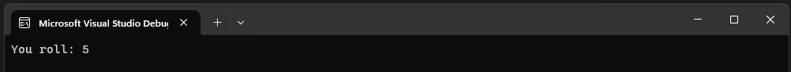
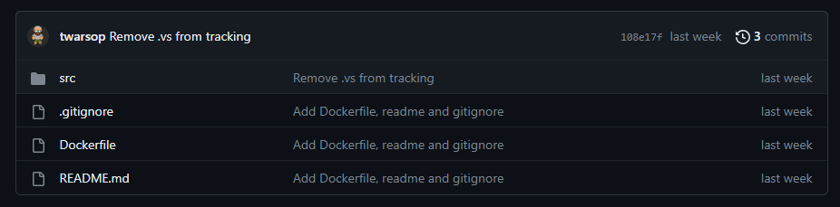
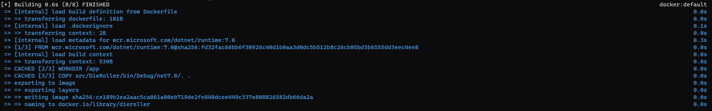
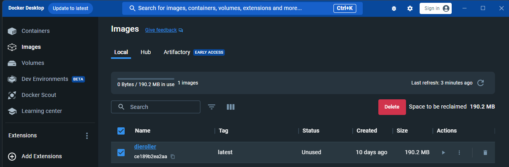
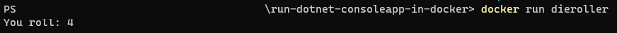
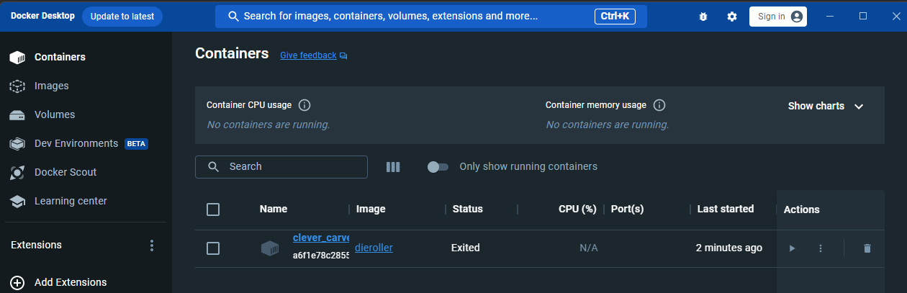

This is post is the first in a series I'm going to write introducing how to run .NET apps in Docker. It's going to introduce this topic by starting with a very simple example in this post and each post will build upon the last until we arrive at a more complicated example involving building and running an API backend with some kind of persistence and a separate front end app that talks to the API.
These posts aren't going to be a deep dive into what Docker is. There is some basic knowledge assumed about what Docker is. The point of these posts are to introduce how to use Docker with .NET apps. Relevant techologies used in this posts are:
Throughout all of the blog posts in this series I'll use the same example of a die rolling simulator for the subject code that will be run within Docker. This first simple example will use a console app that simulates rolling a single (six-sided) die and essentially comprises of the following two lines of code:
var rnd = new Random();
Console.WriteLine($"You roll: {rnd.Next(1, 7)}");
That's it. It doesn't do anything very exciting, just outputs a random number between 1 and 6:
The more interesting bit is how we are going run this in Docker and not via Visual Studio how we normally would.
Note: all the code for this example (including the Dockerfile to run via Docker) can be found in the github repo here.
The first thing we need to do to get this code to run via Docker is add a Dockerfile. This is a file that is literally called Dockerfile with no file extension and we'll put it in the top-level of our repo:
Note: the /src folder in this repo contains the solution for the die rolling simulator.
Our Dockerfile contains the following lines:
FROM mcr.microsoft.com/dotnet/runtime:7.0
WORKDIR /app
COPY src/DieRoller/bin/Debug/net7.0/. .
ENTRYPOINT ["dotnet", "DieRoller.dll"]
Before we build and run our Docker container from this file, let's have a quick look at what each of these line does.
This is the base image we will use as the foundation to build own Docker image. So all the commands that follow this one use the image we define here as a base. In this case, we are using the .NET 7.0 runtime image as that's what we need for our .NET 7.0 console app. You can see all of the docker images provided by Microsoft here.
This sets the working directory for any commands that follow it in the Dockerfile to /app. This is with respect to the Docker image, so the commands that follow it when referencing the Docker image are using /app as the current directory (docs).
In this post we are only concerned with running the console app via Docker. We are not going to consider how to build the console app via Docker. But we still need some built executable that the Docker container can execute. We will get this executable in the Docker container by copying a built executable from the local machine into the Docker image. So this COPY command copies the contents of the folder src/DieRoller/bin/Debug/net7.0/ (which is relative to the location of the Dockerfile) from the local machine into the current working directory of the Docker image (which we set to /app using the previous WORKDIR command).
Obviously, this assumes you will build the die rolling console app to the local machine location given.
This command tells the Docker container what to run after it has been initiated. In our case, this is a .NET based dll with the given name.
To now use this Dockerfile to build an image and run the container from it we need to follow these three steps:
Our setup here is very simplistic - we are using our local mahcine to build everything for the console app, copying it into a Docker image and then executing the dll we built on our machine in the container. So the first step is to build the console app via Visual Studio (or whatever IDE you are using) making sure it's built into the required relative path to the Dockerfile which here is src/DieRoller/bin/Debug/net7.0/ (if you are building to a different location relative to the Dockerfile on your machine you can change this line in the Dockerfile).
Before we can run the Docker container we need to build an image for it using the following command executed in the same folder as the Dockerfile:
docker build -t dieroller .
All this is saying is build a Docker image calling/tagging it dieroller in the current directory.
When you run this command you should see something like the following in the terminal/shell/whatever you ran the command in:
You should also now be able to see the Docker image in your Images list in Docker Desktop:
Now that we have built the Docker image we can run it in a container using the following command:
docker run dieroller
All this is saying is run the dieroller Docker image we have on our machine.
And when you run it you should see the following output:
Which shows our die rolling console app executing.
Note that this has also made a container that we can see in Docker Desktop:
So that's it, we've ran our .NET console app via a Docker container.
In the 2nd part of this blog series (here) you can see how to both build and run the example console app in docker.